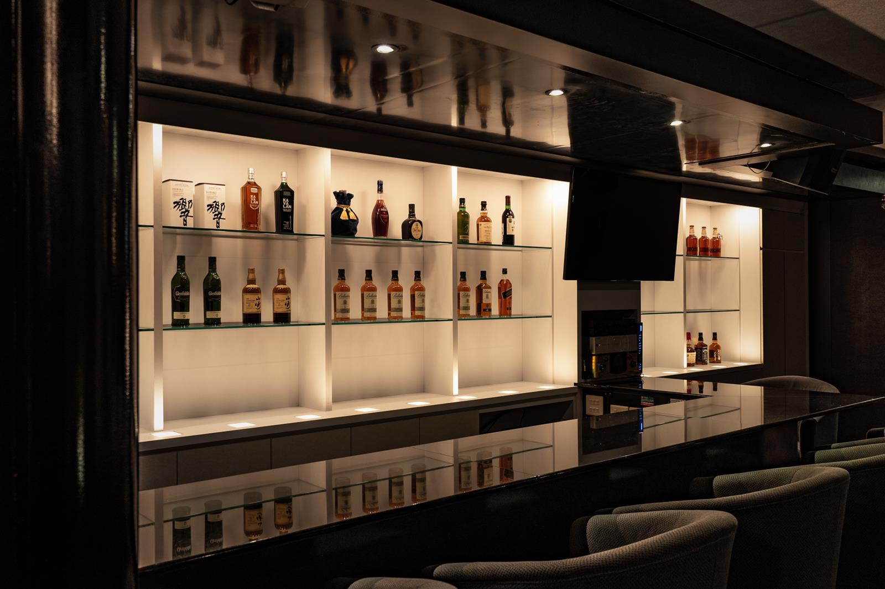

Display cabinet
A large wall-side wine display cabinet with multiple transparent glass shelves.
ANONYMOUS HOSPITALITY PROJECT / WINE BAR
An anonymous Taipei wine-bar record covering a large wall wine display cabinet, glass shelves and soft display lighting.
Discuss a wine display and store drawing
The source document describes a modern bar in central Taipei, where competition for nightlife attention was strong. The owner wanted the alcoholic products to have a clear visual presence, making lighting a central design issue.
A large wall-side wine display cabinet with multiple transparent glass shelves.
The document records collaboration around a KANEKA OLED light panel and describes thin form, low operating temperature and soft shadow characteristics for display.
Transparent tempered glass lets light pass through each shelf to illuminate bottles and packaging; other panels, hardware and finishes are not inferred here.
This page uses an anonymous project document and site photographs to explain the cabinet and lighting requirements; formal contract division, quantity, schedule and authorization are not published.
Modern wine bar; the source points to a central Taipei store, but does not separately record a final delivery destination.
Anonymous project record; client name, quotation, quantity, schedule and performance data are not published.
An anonymous Taipei wine-bar record covering a large wall wine display cabinet, glass shelves and soft display lighting. This page is an anonymous project record; formal specifications, quantity, schedule, contract division and publication authorization require case-by-case confirmation.
The source confirms a wall wine display cabinet, transparent glass shelving and a display-lighting direction. Do not infer formal dimensions, quantity or contract division from the photographs.
Share the store type, display-product dimensions, cabinet width/height/depth, glass and lighting direction, quantity, target date, delivery location and plan/elevation drawings.
Choose a route: Procurement · Design support · Technical resources
Related custom metal parts entry · Modular fixtures
Submit inquiry